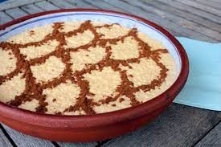

Arroz Doce

One of the most tradicional portuguese dessert
Ingredients
- 1 liter of milk
- 200g of sugar
- 200g of rice
- coffespoon of salt
- lemon peel
- 3 egg yolk
- cinnamon
Preparation
- Bring the milk, sugar, rice and salt to the heat in a pan and
when it comes to a boil,
introduce the lemon peel.
- Simmer on a low heat, stirring occasionally,
until the rice is well cooked but still brothy.
- Crush the yolks with a fork in a bowl,
add a little cooked rice, stir and mix everything in the pot.
- Return to very low heat, and stir for about a minute.
- Remove from heat and distribute in individual bowls or on a deep platter.
- Once cold, sprinkle with cinnamon.